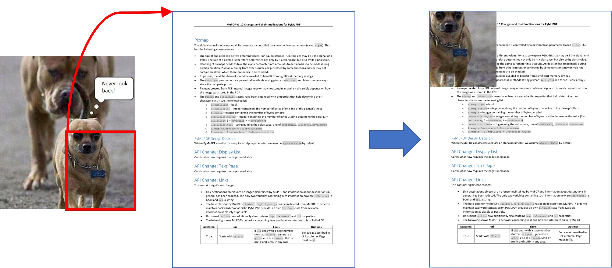

Pixmap¶
Pixmaps (“pixel maps”) are objects at the heart of MuPDF’s rendering capabilities. They represent plane rectangular sets of pixels. Each pixel is described by a number of bytes (“components”) defining its color, plus an optional alpha byte defining its transparency.
In PyMuPDF, there exist several ways to create a pixmap. Except the first one, all of them are available as overloaded constructors. A pixmap can be created …
from a document page (method
Page.get_pixmap())empty, based on Colorspace and IRect information
from a file
from an in-memory image
from a memory area of plain pixels
from an image inside a PDF document
as a copy of another pixmap
Note
A number of image formats is supported as input for points 3. and 4. above. See section Supported Input Image Formats.
Have a look at the FAQ section to see some pixmap usage “at work”.
Method / Attribute |
Short Description |
|---|---|
clear parts of the pixmap |
|
determine used colors |
|
determine share of most used color |
|
copy parts of another pixmap |
|
apply a gamma factor to the pixmap |
|
invert the pixels of a given area |
|
save the pixmap as an OCRed 1-page PDF |
|
save the pixmap as an OCRed 1-page PDF |
|
create a Pillow Image |
|
save as a Pillow Image |
|
write to |
|
return the value of a pixel |
|
save the pixmap in a variety of formats |
|
set alpha values |
|
set the image resolution |
|
set pixmap x,y values |
|
set color and alpha of a pixel |
|
set color and alpha of all pixels in a rectangle |
|
reduce size keeping proportions |
|
tint the pixmap |
|
return a memory area in a variety of formats |
|
return a pixmap made from a quad inside |
|
transparency indicator |
|
pixmap’s Colorspace |
|
MD5 hashcode of the pixmap |
|
pixmap height |
|
interpolation method indicator |
|
check if only black and white occur |
|
check if only one color occurs |
|
IRect of the pixmap |
|
bytes per pixel |
|
|
|
Python pointer to pixel area |
|
|
|
pixmap’s total length |
|
size of one image row |
|
pixmap width |
|
X-coordinate of top-left corner |
|
resolution in X-direction |
|
Y-coordinate of top-left corner |
|
resolution in Y-direction |
Class API
- class Pixmap¶
- __init__(self, colorspace, irect, alpha=False)¶
New empty pixmap: Create an empty pixmap of size and origin given by the rectangle. So, irect.top_left designates the top left corner of the pixmap, and its width and height are irect.width resp. irect.height. Note that the image area is not initialized and will contain crap data – use eg.
clear_with()orset_rect()to be sure.- Parameters:
colorspace (Colorspace) – colorspace.
irect (irect_like) – The pixmap’s position and dimension.
alpha (bool) – Specifies whether transparency bytes should be included. Default is False.
- __init__(self, colorspace, source)¶
Copy and set colorspace: Copy source pixmap converting colorspace. Any colorspace combination is possible, but source colorspace must not be None.
- Parameters:
colorspace (Colorspace) – desired target colorspace. This may also be None. In this case, a “masking” pixmap is created: its
Pixmap.sampleswill consist of the source’s alpha bytes only.source (Pixmap) – the source pixmap.
- __init__(self, source, mask)¶
New in v1.18.18
Copy and add image mask: Copy source pixmap, add an alpha channel with transparency data from a mask pixmap.
- __init__(self, source, width, height[, clip])¶
Copy and scale: Copy source pixmap, scaling new width and height values – the image will appear stretched or shrunk accordingly. Supports partial copying. The source colorspace may be None.
- Parameters:
source (Pixmap) – the source pixmap.
width (float) – desired target width.
height (float) – desired target height.
clip (irect_like) – restrict the resulting pixmap to this region of the scaled pixmap.
Note
If width or height do not represent integers (i.e.
value.is_integer() != True), then the resulting pixmap will have an alpha channel.
- __init__(self, source, alpha=1)¶
Copy and add or drop alpha: Copy source and add or drop its alpha channel. Identical copy if alpha equals source.alpha. If an alpha channel is added, its values will be set to 255.
- Parameters:
source (Pixmap) – source pixmap.
alpha (bool) – whether the target will have an alpha channel, default and mandatory if source colorspace is None.
Note
A typical use includes separation of color and transparency bytes in separate pixmaps. Some applications require this like e.g. wx.Bitmap.FromBufferAndAlpha() of wxPython:
>>> # 'pix' is an RGBA pixmap >>> pixcolors = pymupdf.Pixmap(pix, 0) # extract the RGB part (drop alpha) >>> pixalpha = pymupdf.Pixmap(None, pix) # extract the alpha part >>> bm = wx.Bitmap.FromBufferAndAlpha(pix.width, pix.height, pixcolors.samples, pixalpha.samples)
- __init__(self, filename)¶
From a file: Create a pixmap from filename. All properties are inferred from the input. The origin of the resulting pixmap is (0, 0).
- Parameters:
filename (str) – Path of the image file.
- __init__(self, stream)¶
From memory: Create a pixmap from a memory area. All properties are inferred from the input. The origin of the resulting pixmap is (0, 0).
- Parameters:
stream (bytes,bytearray,BytesIO) –
Data containing a complete, valid image. Could have been created by e.g. stream = bytearray(open(‘image.file’, ‘rb’).read()). Type bytes is supported in Python 3 only, because bytes == str in Python 2 and the method will interpret the stream as a filename.
Changed in version 1.14.13: io.BytesIO is now also supported.
- __init__(self, colorspace, width, height, samples, alpha)¶
From plain pixels: Create a pixmap from samples. Each pixel must be represented by a number of bytes as controlled by the colorspace and alpha parameters. The origin of the resulting pixmap is (0, 0). This method is useful when raw image data are provided by some other program – see FAQ.
- Parameters:
colorspace (Colorspace) – Colorspace of image.
width (int) – image width
height (int) – image height
samples (bytes,bytearray,BytesIO) –
an area containing all pixels of the image. Must include alpha values if specified.
Changed in version 1.14.13: (1) io.BytesIO can now also be used. (2) Data are now copied to the pixmap, so may safely be deleted or become unavailable.
alpha (bool) – whether a transparency channel is included.
Note
The following equation must be true: (colorspace.n + alpha) * width * height == len(samples).
Starting with version 1.14.13, the samples data are copied to the pixmap.
- __init__(self, doc, xref)¶
From a PDF image: Create a pixmap from an image contained in PDF doc identified by its
xref. All pimap properties are set by the image. Have a look at extract-img1.py and extract-img2.py to see how this can be used to recover all of a PDF’s images.- Parameters:
doc (Document) – an opened PDF document.
xref (int) – the
xrefof an image object. For example, you can make a list of images used on a particular page withDocument.get_page_images(), which also shows thexrefnumbers of each image.
- clear_with([value[, irect]])¶
Initialize the samples area.
- Parameters:
value (int) – if specified, values from 0 to 255 are valid. Each color byte of each pixel will be set to this value, while alpha will be set to 255 (non-transparent) if present. If omitted, then all bytes (including any alpha) are cleared to 0x00.
irect (irect_like) – the area to be cleared. Omit to clear the whole pixmap. Can only be specified, if value is also specified.
- tint_with(black, white)¶
Colorize a pixmap by replacing black and / or white with colors given as sRGB integer values. Only colorspaces
CS_GRAYandCS_RGBare supported, others are ignored with a warning.If the colorspace is
CS_GRAY, the average (red + green + blue)/3 will be taken. The pixmap will be changed in place.- Parameters:
black (int) – replace black with this value. Specifying 0x000000 makes no changes.
white (int) – replace white with this value. Specifying 0xFFFFFF makes no changes.
Examples:
tint_with(0x000000, 0xFFFFFF)is a no-op.tint_with(0x00FF00, 0xFFFFFF)changes black to green, leaves white intact.tint_with(0xFF0000, 0x0000FF)changes black to red and white to blue.
- gamma_with(gamma)¶
Apply a gamma factor to a pixmap, i.e. lighten or darken it. Pixmaps with colorspace None are ignored with a warning.
- Parameters:
gamma (float) – gamma = 1.0 does nothing, gamma < 1.0 lightens, gamma > 1.0 darkens the image.
- shrink(n)¶
Shrink the pixmap by dividing both, its width and height by 2:sup:
n.- Parameters:
n (int) – determines the new pixmap (samples) size. For example, a value of 2 divides width and height by 4 and thus results in a size of one 16th of the original. Values less than 1 are ignored with a warning.
Note
Use this methods to reduce a pixmap’s size retaining its proportion. The pixmap is changed “in place”. If you want to keep original and also have more granular choices, use the resp. copy constructor above.
- pixel(x, y)¶
New in version:: 1.14.5: Return the value of the pixel at location (x, y) (column, line).
- Parameters:
x (int) – the column number of the pixel. Must be in
range(pix.width).y (int) – the line number of the pixel, Must be in
range(pix.height).
- Return type:
list
- Returns:
a list of color values and, potentially the alpha value. Its length and content depend on the pixmap’s colorspace and the presence of an alpha. For RGBA pixmaps the result would e.g. be [r, g, b, a]. All items are integers in
range(256).
- set_pixel(x, y, color)¶
New in version 1.14.7: Manipulate the pixel at location (x, y) (column, line).
- Parameters:
x (int) – the column number of the pixel. Must be in
range(pix.width).y (int) – the line number of the pixel. Must be in
range(pix.height).color (sequence) – the desired pixel value given as a sequence of integers in
range(256). The length of the sequence must equalPixmap.n, which includes any alpha byte.
- set_rect(irect, color)¶
New in version 1.14.8: Set the pixels of a rectangle to a value.
- Parameters:
irect (irect_like) – the rectangle to be filled with the value. The actual area is the intersection of this parameter and
Pixmap.irect. For an empty intersection (or an invalid parameter), no change will happen.color (sequence) – the desired value, given as a sequence of integers in
range(256). The length of the sequence must equalPixmap.n, which includes any alpha byte.
- Return type:
bool
- Returns:
False if the rectangle was invalid or had an empty intersection with
Pixmap.irect, else True.
Note
This method is equivalent to
Pixmap.set_pixel()executed for each pixel in the rectangle, but is obviously very much faster if many pixels are involved.This method can be used similar to
Pixmap.clear_with()to initialize a pixmap with a certain color like this: pix.set_rect(pix.irect, (255, 255, 0)) (RGB example, colors the complete pixmap with yellow).
- set_origin(x, y)¶
New in v1.17.7
Set the x and y values of the pixmap’s top-left point.
- Parameters:
x (int) – x coordinate
y (int) – y coordinate
- set_dpi(xres, yres)¶
New in v1.16.17
Changed in v1.18.0: When saving as a PNG image, these values will be stored now.
Set the resolution (dpi) in x and y direction.
- Parameters:
xres (int) – resolution in x direction.
yres (int) – resolution in y direction.
- set_alpha(alphavalues, premultiply=1, opaque=None)¶
Changed in v 1.18.13
Change the alpha values. The pixmap must have an alpha channel.
- Parameters:
alphavalues (bytes,bytearray,BytesIO) – the new alpha values. If provided, its length must be at least width * height. If omitted (
None), all alpha values are set to 255 (no transparency). Changed in version 1.14.13: io.BytesIO is now also accepted.premultiply (bool) – New in v1.18.13: whether to premultiply color components with the alpha value.
opaque (list,tuple) – ignore the alpha value and set this color to fully transparent. A sequence of integers in
range(256)with a length ofPixmap.n. Default is None. For example, a typical choice for RGB would beopaque=(255, 255, 255)(white).
- invert_irect([irect])¶
Invert the color of all pixels in IRect irect. Will have no effect if colorspace is None.
- Parameters:
irect (irect_like) – The area to be inverted. Omit to invert everything.
- copy(source, irect)¶
Copy the irect part of the source pixmap into the corresponding area of this one. The two pixmaps may have different dimensions and can each have
CS_GRAYorCS_RGBcolorspaces, but they currently must have the same alpha property [2]. The copy mechanism automatically adjusts discrepancies between source and target like so:If copying from
CS_GRAYtoCS_RGB, the source gray-shade value will be put into each of the three rgb component bytes. If the other way round, (r + g + b) / 3 will be taken as the gray-shade value of the target.Between irect and the target pixmap’s rectangle, an “intersection” is calculated at first. This takes into account the rectangle coordinates and the current attribute values
Pixmap.xandPixmap.y(which you are free to modify for this purpose viaPixmap.set_origin()). Then the corresponding data of this intersection are copied. If the intersection is empty, nothing will happen.- Parameters:
source (Pixmap) – source pixmap.
irect (irect_like) – The area to be copied.
Note
Example: Suppose you have two pixmaps,
pix1andpix2and you want to copy the lower right quarter ofpix2topix1such that it starts at the top-left point ofpix1. Use the following snippet:>>> # safeguard: set top-left of pix1 and pix2 to (0, 0) >>> pix1.set_origin(0, 0) >>> pix2.set_origin(0, 0) >>> # compute top-left coordinates of pix2 region to copy >>> x1 = int(pix2.width / 2) >>> y1 = int(pix2.height / 2) >>> # shift top-left of pix2 such, that the to-be-copied >>> # area starts at (0, 0): >>> pix2.set_origin(-x1, -y1) >>> # now copy ... >>> pix1.copy(pix2, (0, 0, x1, y1))
- save(filename, output=None, jpg_quality=95)¶
Changed in v1.22.0: Added direct support of JPEG images. Image quality can be controlled via parameter “jpg_quality”.
Save pixmap as an image file. Depending on the output chosen, only some or all colorspaces are supported and different file extensions can be chosen. Please see the table below.
- Parameters:
filename (str,Path,file) – The file to save to. May be provided as a string, as a
pathlib.Pathor as a Python file object. In the latter two cases, the filename is taken from the resp. object. The filename’s extension determines the image format, which can be overruled by the output parameter.output (str) – The desired image format. The default is the filename’s extension. If both, this value and the file extension are unsupported, an exception is raised. For possible values see Supported Output Image Formats.
jpg_quality (int) – The desired image quality, default 95. Only applies to JPEG images, else ignored. This parameter trades quality against file size. A value of 98 is close to lossless. Higher values should not lead to better quality.
- Raises:
ValueError – For unsupported image formats.
- tobytes(output='png', jpg_quality=95)¶
New in version 1.14.5: Return the pixmap as a bytes memory object of the specified format – similar to
save().Changed in v1.22.0: Added direct JPEG support. Image quality can be influenced via new parameter “jpg_quality”.
- Parameters:
output (str) – The desired image format. The default is “png”. For possible values see Supported Output Image Formats.
jpg_quality (int) – The desired image quality, default 95. Only applies to JPEG images, else ignored. This parameter trades quality against file size. A value of 98 is close to lossless. Higher values should not lead to better quality.
output – The requested image format. The default is “png”. For other possible values see Supported Output Image Formats.
- Raises:
ValueError – For unsupported image formats.
- Return type:
bytes
- pdfocr_save(filename, compress=True, language='eng', tessdata=None)¶
New in v1.19.0
Changed in v1.22.5: Support of new parameter for Tesseract’s tessdata.
Perform text recognition using Tesseract and save the image as a 1-page PDF with an OCR text layer.
- Parameters:
filename (str,fp) – identifies the file to save to. May be either a string or a pointer to a file opened with “wb” (includes
io.BytesIO()objects).compress (bool) – whether to compress the resulting PDF, default is
True.language (str) – the languages occurring in the image. This must be specified in Tesseract format. Default is “eng” for English. Use “+”-separated Tesseract language codes for multiple languages, like “eng+spa” for English and Spanish.
tessdata (str) – folder name of Tesseract’s language support. If omitted, this information must be present as environment variable
TESSDATA_PREFIX.
Note
Will fail if Tesseract is not installed or if the environment variable “TESSDATA_PREFIX” is not set to the
tessdatafolder name and not provided as parameter.
- pdfocr_tobytes(compress=True, language='eng', tessdata=None)¶
New in v1.19.0
Changed in v1.22.5: Support of new parameter for Tesseract’s tessdata.
Perform text recognition using Tesseract and convert the image to a 1-page PDF with an OCR text layer. Internally invokes
Pixmap.pdfocr_save().- Returns:
A 1-page PDF file in memory. Could be opened like
doc=pymupdf.open("pdf", pix.pdfocr_tobytes()), and text extractions could be performed on itspage=doc[0].Note
Another possible use is insertion into some pdf. The following snippet reads the images of a folder and stores them as pages in a new PDF that contain an OCR text layer:
doc = pymupdf.open() for imgfile in os.listdir(folder): pix = pymupdf.Pixmap(imgfile) imgpdf = pymupdf.open("pdf", pix.pdfocr_tobytes()) doc.insert_pdf(imgpdf) pix = None imgpdf.close() doc.save("ocr-images.pdf")
- pil_image()¶
Create a Pillow Image from the pixmap. PIL / Pillow must be installed.
- Raises:
ImportError – if Pillow is not installed.
- Returns:
a ˇˇPIL.Imageˇˇ object
- pil_save(*args, unmultiply=False, **kwargs)¶
Write the pixmap as an image file using Pillow. Use this method for output unsupported by MuPDF. Examples are
Formats JPX, J2K, WebP, etc.
Storing EXIF information.
If you do not provide dpi information, the values xres, yres stored with the pixmap are automatically used.
A simple example:
pix.pil_save("some.webp", optimize=True, dpi=(150, 150)).- Parameters:
unmultiply (bool) – If the pixmap’s colorspace is RGB with transparency, the alpha values may or may not already be multiplied into the color components ref/green/blue (called “premultiplied”). To enforce undoing premultiplication, set this parameter to
True. To learn about some background, e.g. look for “Premultiplied alpha” here.
For details on other parameters see the Pillow documentation.
Since v1.22.0, PyMuPDF supports JPEG output directly. We recommended to no longer use this method for JPEG output – for performance reasons and for avoiding unnecessary external dependencies.
- Raises:
ImportError – if Pillow is not installed.
- pil_tobytes(*args, unmultiply=False, **kwargs)¶
New in v1.17.3
Return an image as a bytes object in the specified format using Pillow. For example
stream = pix.pil_tobytes(format="WEBP", optimize=True, dpi=(150, 150)). Also see above. For details on other parameters see the Pillow documentation.- Raises:
ImportError – if Pillow is not installed.
- Return type:
bytes
- warp(quad, width, height)¶
New in v1.19.3
Return a new pixmap by “warping” the quad such that the quad corners become the new pixmap’s corners. The target pixmap’s IRect will be
(0, 0, width, height).- Parameters:
quad (quad_like) – a convex quad with coordinates inside
Pixmap.irect(including the border points).width (int) – desired resulting width.
height (int) – desired resulting height.
- Returns:
A new pixmap where the quad corners are mapped to the pixmap corners in a clockwise fashion:
quad.ul -> irect.tl,quad.ur -> irect.tr, etc.- Return type:
-

- color_count(colors=False, clip=None)¶
New in v1.19.2
Changed in v1.19.3
Determine the pixmap’s unique colors and their count.
- Parameters:
colors (bool) – (changed in v1.19.3) If
Truereturn a dictionary of color pixels and their usage count, else just the number of unique colors.clip (rect_like) – a rectangle inside
Pixmap.irect. If provided, only those pixels are considered. This allows inspecting sub-rectangles of a given pixmap directly – instead of building sub-pixmaps.
- Return type:
dict or int
- Returns:
either the number of colors, or a dictionary with the items
pixel: count. The pixel key is abytesobject of lengthPixmap.n.Note
To recover the tuple of a pixel, use
tuple(colors.keys()[i])for the i-th item.The response time depends on the pixmap’s samples size and may be more than a second for very large pixmaps.
Where applicable, pixels with different alpha values will be treated as different colors.
- color_topusage(clip=None)¶
New in v1.19.3
Return the most frequently used color and its relative frequency.
- Parameters:
clip (rect_like) – A rectangle inside
Pixmap.irect. If provided, only those pixels are considered. This allows inspecting sub-rectangles of a given pixmap directly – instead of building sub-pixmaps.- Return type:
tuple
- Returns:
A tuple
(ratio, pixel)where0 < ratio <= 1and pixel is the pixel value of the color. Use this to decide if the image is “almost” unicolor: a response(0.95, b"x00x00x00")means that 95% of all pixels are black. See an example here How to Use Pixmaps: Checking Text Visibility.
- alpha¶
Indicates whether the pixmap contains transparency information.
- Type:
bool
- digest¶
The MD5 hashcode (16 bytes) of the pixmap. This is a technical value used for unique identifications.
- Type:
bytes
- colorspace¶
The colorspace of the pixmap. This value may be None if the image is to be treated as a so-called image mask or stencil mask (currently happens for extracted PDF document images only).
- Type:
- stride¶
Contains the length of one row of image data in
Pixmap.samples. This is primarily used for calculation purposes. The following expressions are true:len(samples) == height * stridewidth * n == stride
- Type:
int
- is_monochrome¶
New in v1.19.2
Is
Truefor a gray pixmap which only has the colors black and white.- Type:
bool
- is_unicolor¶
New in v1.19.2
Is
Trueif all pixels are identical (any colorspace). Where applicable, pixels with different alpha values will be treated as different colors.- Type:
bool
- samples¶
The color and (if
Pixmap.alphais true) transparency values for all pixels. It is an area ofwidth * height * nbytes. Each n bytes define one pixel. Each successive n bytes yield another pixel in scanline order. Subsequent scanlines follow each other with no padding. E.g. for an RGBA colorspace this means, samples is a sequence of bytes like …, R, G, B, A, …, and the four byte values R, G, B, A define one pixel.This area can be passed to other graphics libraries like PIL (Python Imaging Library) to do additional processing like saving the pixmap in other image formats.
Note
The underlying data is typically a large memory area, from which a
bytescopy is made for this attribute … each time you access it: for example an RGB-rendered letter page has a samples size of almost 1.4 MB. So consider assigning a new variable to it or use thememoryviewversionPixmap.samples_mv(new in v1.18.17).Any changes to the underlying data are available only after accessing this attribute again. This is different from using the memoryview version.
- Type:
bytes
- samples_mv¶
New in v1.18.17
Like
Pixmap.samples, but in Pythonmemoryviewformat. It is built pointing to the memory in the pixmap – not from a copy of it. So its creation speed is independent from the pixmap size, and any changes to pixels will be available immediately.Copies like
bytearray(pix.samples_mv), orbytes(pixmap.samples_mv)are equivalent to and can be used in place ofpix.samples.We also have
len(pix.samples) == len(pix.samples_mv).Look at this example from a 2 MB JPEG: the memoryview is ten thousand times faster:
In [3]: %timeit len(pix.samples_mv) 367 ns ± 1.75 ns per loop (mean ± std. dev. of 7 runs, 1000000 loops each) In [4]: %timeit len(pix.samples) 3.52 ms ± 57.5 µs per loop (mean ± std. dev. of 7 runs, 100 loops each)
After the Pixmap has been destroyed, any attempt to use the memoryview will fail with ValueError.
- Type:
memoryview
- samples_ptr¶
New in v1.18.17
Python pointer to the pixel area. This is a special integer format, which can be used by supporting applications (such as PyQt) to directly address the samples area and thus build their images extremely fast. For example:
img = QtGui.QImage(pix.samples, pix.width, pix.height, format) # (1) img = QtGui.QImage(pix.samples_ptr, pix.width, pix.height, format) # (2)
Both of the above lead to the same Qt image, but (2) can be many hundred times faster, because it avoids an additional copy of the pixel area.
Warning: after the Pixmap has been destroyed, the Python pointer will be invalid and attempting to use it may crash the Python interpreter.
- Type:
int
- size¶
Contains len(pixmap). This will generally equal len(pix.samples) plus some platform-specific value for defining other attributes of the object.
- Type:
int
- width¶
- w¶
Width of the region in pixels.
- Type:
int
- height¶
- h¶
Height of the region in pixels.
- Type:
int
- x¶
X-coordinate of top-left corner in pixels. Cannot directly be changed – use
Pixmap.set_origin().- Type:
int
- y¶
Y-coordinate of top-left corner in pixels. Cannot directly be changed – use
Pixmap.set_origin().- Type:
int
- n¶
Number of components per pixel. This number depends on colorspace and alpha. If colorspace is not None (stencil masks), then Pixmap.n - Pixmap.alpha == pixmap.colorspace.n is true. If colorspace is None, then n == alpha == 1.
- Type:
int
- xres¶
Horizontal resolution in dpi (dots per inch). Please also see
resolution. Cannot directly be changed – usePixmap.set_dpi().- Type:
int
- yres¶
Vertical resolution in dpi (dots per inch). Please also see
resolution. Cannot directly be changed – usePixmap.set_dpi().- Type:
int
- interpolate¶
An information-only boolean flag set to True if the image will be drawn using “linear interpolation”. If False “nearest neighbour sampling” will be used.
- Type:
bool
{kind=link}
Supported Input Image Formats¶
The following file types are supported as input to construct pixmaps: BMP, JPEG, GIF, TIFF, JXR, JPX, PNG, PAM and all of the Portable Anymap family (PBM, PGM, PNM, PPM). This support is two-fold:
Directly create a pixmap with Pixmap(filename) or Pixmap(byterray). The pixmap will then have properties as determined by the image.
Open such files with pymupdf.open(…). The result will then appear as a document containing one single page. Creating a pixmap of this page offers all the options available in this context: apply a matrix, choose colorspace and alpha, confine the pixmap to a clip area, etc.
SVG images are only supported via method 2 above, not directly as pixmaps. But remember: the result of this is a raster image as is always the case with pixmaps [1].
Supported Output Image Formats¶
A number of image output formats are supported. You have the option to either write an image directly to a file (Pixmap.save()), or to generate a bytes object (Pixmap.tobytes()). Both methods accept a string identifying the desired format (Format column below). Please note that not all combinations of pixmap colorspace, transparency support (alpha) and image format are possible.
Format |
Colorspaces |
alpha |
Extensions |
Description |
|---|---|---|---|---|
jpg, jpeg |
gray, rgb, cmyk |
no |
.jpg, .jpeg |
Joint Photographic Experts Group |
pam |
gray, rgb, cmyk |
yes |
.pam |
Portable Arbitrary Map |
pbm |
gray, rgb |
no |
.pbm |
Portable Bitmap |
pgm |
gray, rgb |
no |
.pgm |
Portable Graymap |
png |
gray, rgb |
yes |
.png |
Portable Network Graphics |
pnm |
gray, rgb |
no |
.pnm |
Portable Anymap |
ppm |
gray, rgb |
no |
.ppm |
Portable Pixmap |
ps |
gray, rgb, cmyk |
no |
.ps |
Adobe PostScript Image |
psd |
gray, rgb, cmyk |
yes |
.psd |
Adobe Photoshop Document |
Note
Not all image file types are supported (or at least common) on all OS platforms. E.g. PAM and the Portable Anymap formats are rare or even unknown on Windows.
Especially pertaining to CMYK colorspaces, you can always convert a CMYK pixmap to an RGB pixmap with rgb_pix = pymupdf.Pixmap(pymupdf.csRGB, cmyk_pix) and then save that in the desired format.
As can be seen, MuPDF’s image support range is different for input and output. Among those supported both ways, PNG and JPEG are probably the most popular.
We also recommend using “ppm” formats as input to tkinter’s PhotoImage method like this: tkimg = tkinter.PhotoImage(data=pix.tobytes(“ppm”)) (also see the tutorial). This is very fast (60 times faster than PNG).
Footnotes